이 도구가 하는 일
발표자가 만든 건 Claude Code에 얹는 마케팅용 스킬 묶음이에요. 웹사이트 주소 하나를 넣으면 카피, SEO, 퍼널, 경쟁사를 점검하고 고객에게 보낼 PDF 보고서까지 만들어 줘요. 발표자는 마케팅 대행사가 매달 5천~1만 달러를 받는 일을 무료로 할 수 있다고 소개해요.
그가 보는 시장은 이래요. 작은 업체는 마케팅 도움이 절실하지만 대행사를 쓸 돈이 없어요. 반대로 AI 대행 사업을 시작하고 싶은 사람은 일을 해낼 도구가 없어요. 이 도구가 양쪽을 이어 준다는 게 발표자의 주장이에요.
명령 15개
스킬은 모두 15개이고, 각각 슬래시 명령으로 불러요. 저장소 README에 정리된 목록이에요.
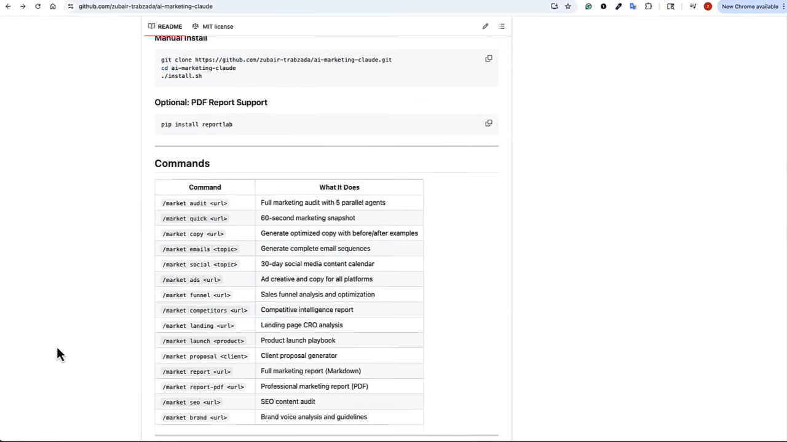
| 무엇을 하나요 | 명령 예시 |
|---|---|
| 사이트 전체 감사 (에이전트 5개 병렬) | audit |
| 60초 요약 진단 | quick |
| 카피 개선, 이메일 시퀀스, 30일 소셜 캘린더, 광고 카피 | copy emails social ads |
| 퍼널, 랜딩 페이지, SEO, 브랜드 보이스 분석 | funnel landing seo brand |
| 경쟁사 분석, 출시 계획 | competitors launch |
| 고객 제안서, 보고서(마크다운·PDF) | proposal report report-pdf |
Calendly로 먼저 시연
발표자는 일정 예약 서비스 Calendly 사이트에 /market-audit를 돌려요. 에이전트 5개가 동시에 출발하고, 몇 분 뒤 75/100점(B등급)이 나와요. 터미널에는 항목별 점수, 바로 할 수 있는 개선 3가지, 전략적 개선 3가지가 찍혀요.
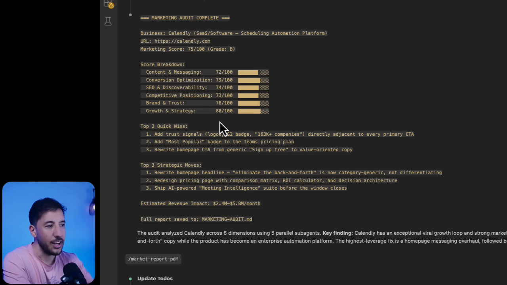
발표자는 대행사가 수천 달러를 받는 수준의 보고서를 2분 만에 무료로 만들었다고 말해요. 다만 이 금액은 발표자의 주장이에요.
설치: VS Code, Claude Code, 명령 한 줄
설치는 세 단계예요. 이미 VS Code와 Claude Code를 쓰고 있다면 3단계로 바로 가면 돼요.
1. VS Code 설치
VS Code는 파일, 폴더, Claude Code를 한 화면에서 함께 볼 수 있는 편집기예요. 공식 사이트에서 운영체제에 맞는 버전을 받으면 돼요. 발표자는 구글의 Antigravity도 비슷한 편집기라 써도 된다고 해요.
2. Claude Code 확장 설치
VS Code 왼쪽의 확장 프로그램 탭에서 'Claude Code'를 검색해요. 첫 번째로 나오는 'Claude Code for VS Code'가 맞는지, 만든 곳이 Anthropic인지 확인하고 설치해요. 설치가 끝나면 오른쪽 위에 Claude Code 아이콘이 생기고, 누르면 바로 쓸 수 있어요.
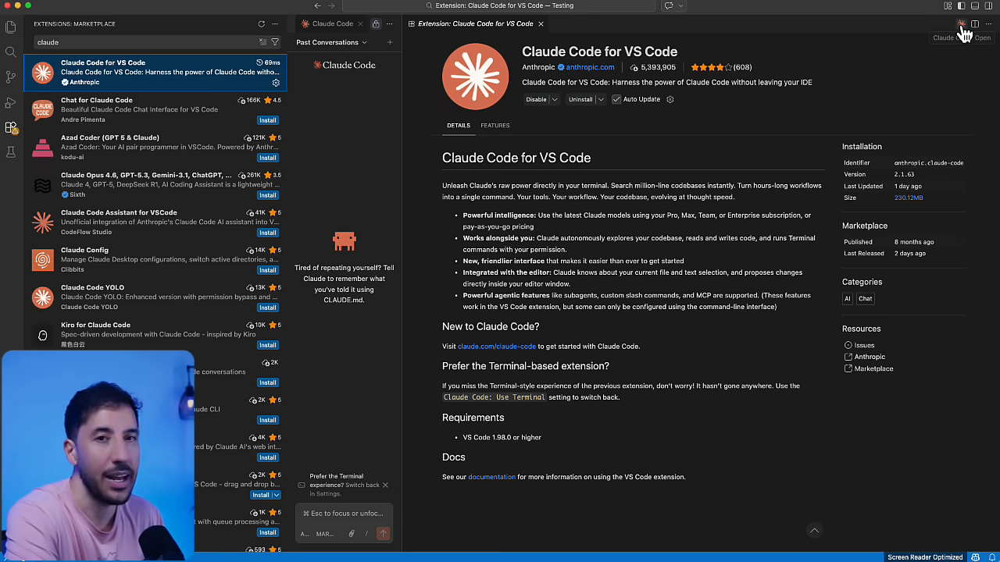
3. 마케팅 스킬 설치
발표자의 GitHub 저장소 ai-marketing-claude를 열고, Installation 항목의 명령을 복사해요. VS Code 위쪽의 패널 토글로 터미널을 열고 붙여 넣은 뒤 엔터를 누르면 끝이에요. 작업용 폴더를 하나 만들어 VS Code로 열어 두고 시작하길 권해요.
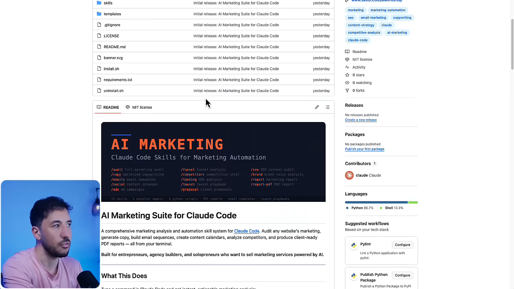
zubair-trabzada/ai-marketing-claude예요. 영상 03:36에서 보기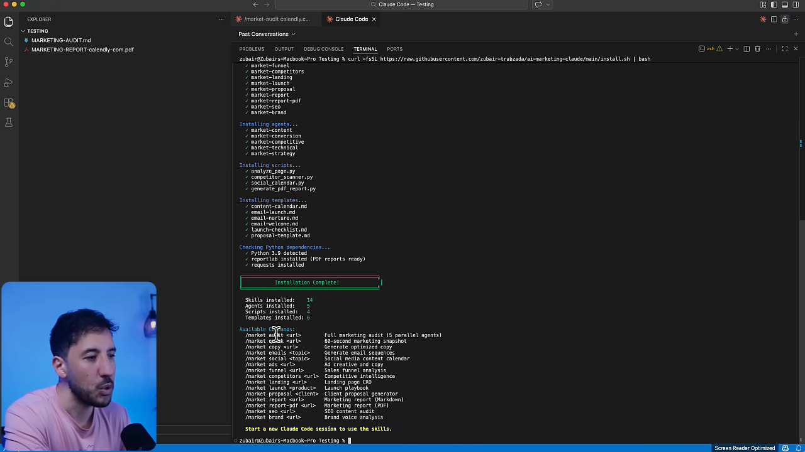
확인은 간단해요. Claude Code 입력창에 /를 누르고 market을 치면 관련 슬래시 명령이 목록으로 떠요.
동네 메드스파 사이트로 돌려 보기
Calendly는 큰 회사라, 이번에는 지역 업체로 시험해요. 발표자는 구글에서 'San Francisco med spa'를 검색하고 Nob Hill Aesthetics를 골라요. 메드스파는 고객층이 높은 가격대라 마케팅 예산이 넉넉한 업종이라는 이유예요.
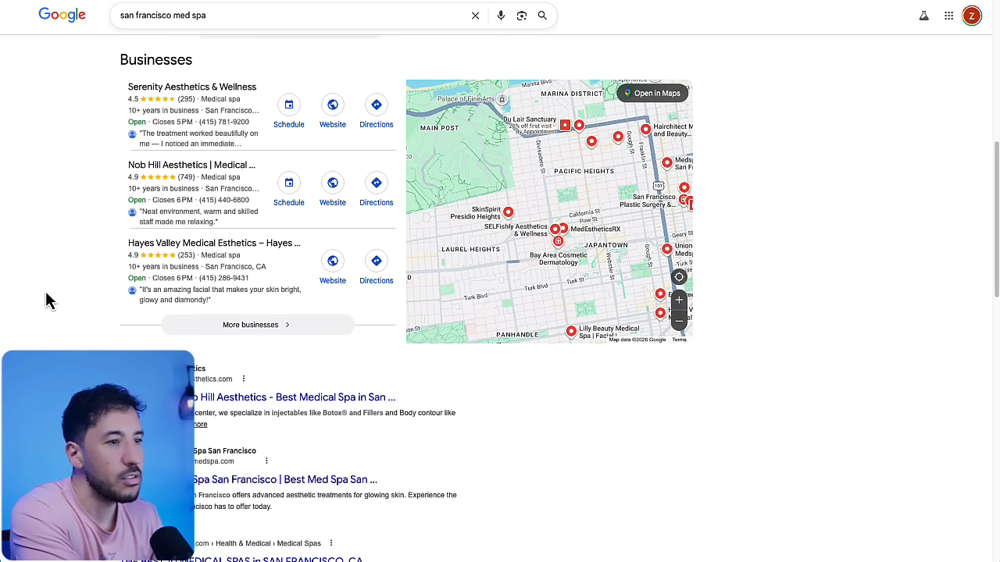
업체 사이트 주소를 복사해 /market-audit 뒤에 붙이고 실행해요. Claude Code는 할 일 목록을 먼저 띄워요. 홈페이지 읽기, 업종 판별, 서브에이전트 5개 실행, 점수 합산, 보고서 작성, 요약 출력 순서예요.
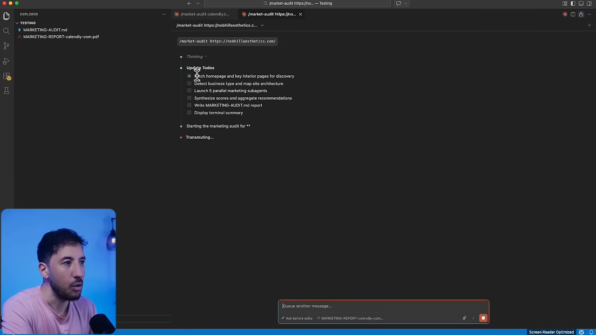
진행 중에 여러 번 허락을 구해요. 다른 도메인의 페이지를 읽어도 되는지, 검색을 해도 되는지 묻는 거예요. 발표자는 계속 허용해 주고, 분석이 도는 동안 저장소 구조를 설명해요.
SKILL.md 안을 들여다보면
저장소에는 기능별 폴더가 있고, 폴더마다 SKILL.md라는 파일이 하나씩 들어 있어요. 이 파일이 Claude Code를 특정 분야의 전문가로 만들어 주는 지시문이에요. Claude Code는 원래 무엇이든 하는 범용 조수라서, 특정 일을 정해진 방식대로 시키려면 이렇게 파일로 적어 두는 거예요.
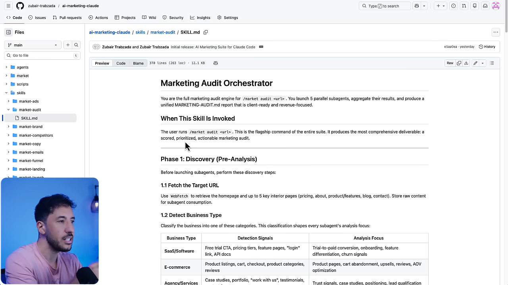
market-audit의 지시문은 스스로를 '감사 총괄'로 소개하고, 서브에이전트 5개를 띄워 결과를 합치라고 적어 둬요. 영상 07:02에서 보기1단계: 사전 조사
서브에이전트를 띄우기 전에 먼저 할 일이 있어요. 대상 주소의 홈페이지와 주요 내부 페이지를 읽고, 업종을 판별하고, 주요 페이지 목록을 만들어요. 업종에 따라 각 에이전트가 볼 지점이 달라져요.
| 업종 | 무엇으로 알아보나요 | 중점적으로 보는 것 |
|---|---|---|
| SaaS·소프트웨어 | 무료 체험 버튼, 요금제, 로그인 | 체험에서 유료 전환, 온보딩, 이탈 신호 |
| 쇼핑몰 | 상품 목록, 장바구니, 결제 | 상품 페이지, 장바구니 이탈, 리뷰 |
| 대행사·서비스 | 사례 연구, 포트폴리오, 문의 양식 | 신뢰 신호, 포지셔닝, 잠재 고객 선별 |
| 지역 업체 | 주소, 전화번호, 영업시간, 구글 지도 | 지역 검색, 구글 비즈니스 프로필, 리뷰 |
| 크리에이터·강의 | 무료 자료, 이메일 수집, 강의 목록 | 이메일 수집률, 퍼널 설계, 후기 |
| 마켓플레이스 | 판매자·구매자 양쪽 안내 | 수요와 공급 균형, 신뢰 장치 |
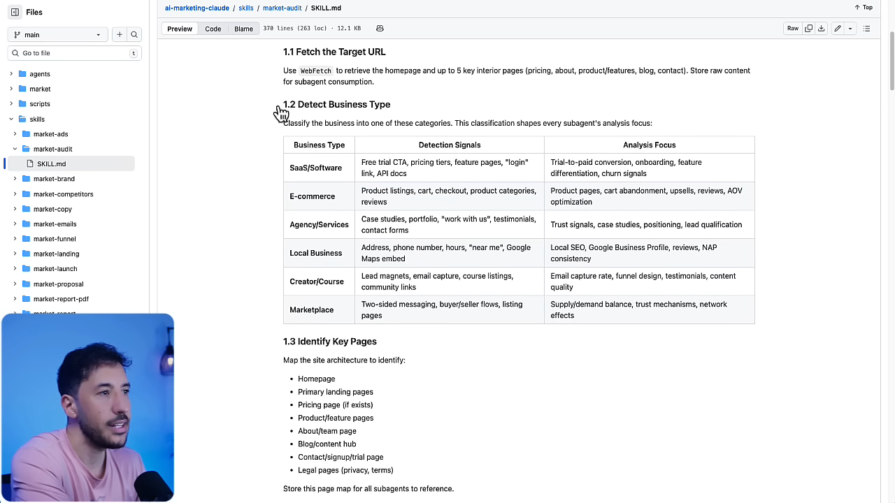
2단계: 서브에이전트 5개 병렬 분석
이제 서브에이전트 5개를 동시에 띄워요. 각자 업종 정보와 페이지 목록을 받아서 자기 분야만 따로 봐요. 분야별 점수는 나중에 가중치를 매겨 하나로 합쳐요.
| 서브에이전트 | 맡은 일 |
|---|---|
market-content | 헤드라인, 가치 제안, 본문 설득력, 후기·사례 같은 사회적 증거 |
market-conversion | CTA, 양식 입력 부담, 페이지 흐름, 모바일 전환 |
market-competitive | 차별점, 경쟁사 대비 위치 |
market-technical | 기술적 SEO와 추적 설정 |
market-strategy | 브랜드, 가격, 성장 전략 |
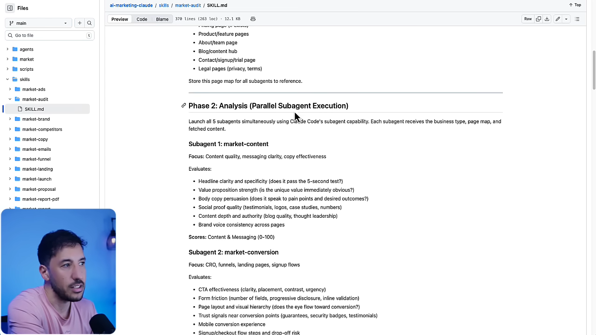
분석 중에 Claude Code가 계속 허락을 구하는 것도 이 파일 때문이에요. 지시문에 적힌 대로 검색하고 페이지를 읽으려다 보니 그때마다 묻는 거예요. 모든 단계가 끝나면 마지막으로 요약을 보여 줘요.
스킬은 따로따로 돌릴 수도 있어요
전체 감사가 아니라 한 가지만 궁금하면 해당 명령만 돌리면 돼요. 예를 들어 경쟁사만 알고 싶으면 /market-competitors를 써요. 이 스킬은 경쟁사를 세 갈래로 나눠 찾아요. 같은 상품을 같은 고객에게 파는 직접 경쟁사, 같은 문제를 다른 방식으로 푸는 간접 경쟁사, 시장을 이끄는 지향 경쟁사예요.
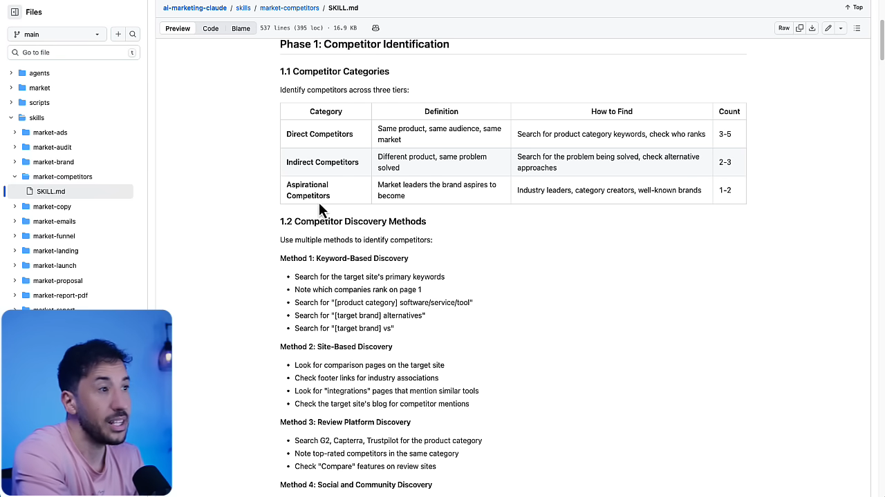
발표자는 이 구조 덕분에 코딩 배경이 없어도 된다고 강조해요. 필요한 명령을 고르기만 하면 나머지는 Claude Code가 파일에 적힌 대로 처리한다는 거예요.
결과를 PDF 보고서로
서브에이전트 5개가 모두 끝나면 Claude Code가 점수를 합치고 보고서를 써요. Nob Hill Aesthetics의 결과는 64/100점이에요.
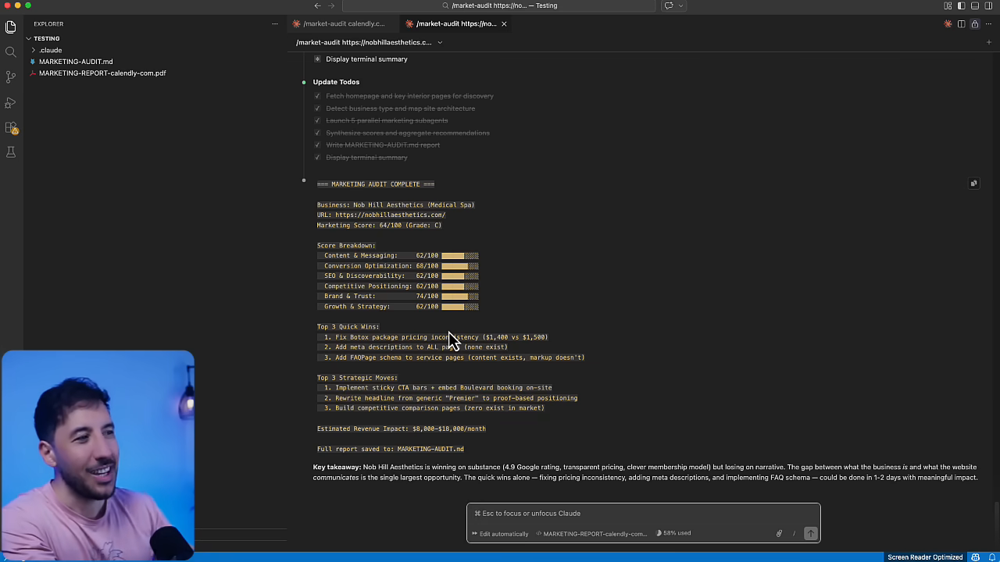
터미널 결과는 고객에게 보여 주기엔 읽기 불편해요. 그래서 /market-report-pdf를 이어서 실행해요. 입력창에 /를 누르고 market을 친 다음 목록에서 고르면 돼요. 앞서 감사한 결과를 바탕으로 서식과 그래프를 갖춘 PDF를 만들어요.
처음 한 번은 PDF를 만드는 Python 도구를 설치해도 되는지 물어요. 허락하면 잠시 뒤 왼쪽 파일 목록에 Nob Hill Aesthetics PDF가 생겨요.
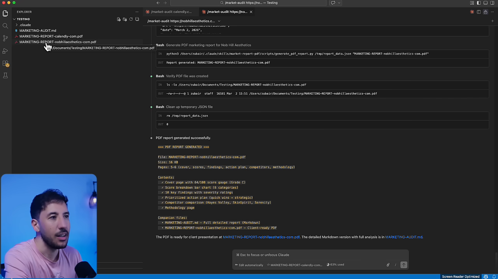
보고서 읽는 법과 영업에 쓰는 법
PDF는 표지, 점수, 주요 문제, 실행 계획, 경쟁사 비교, 방법론 순서로 짜여 있어요. 터미널 결과보다 훨씬 읽기 좋아요.
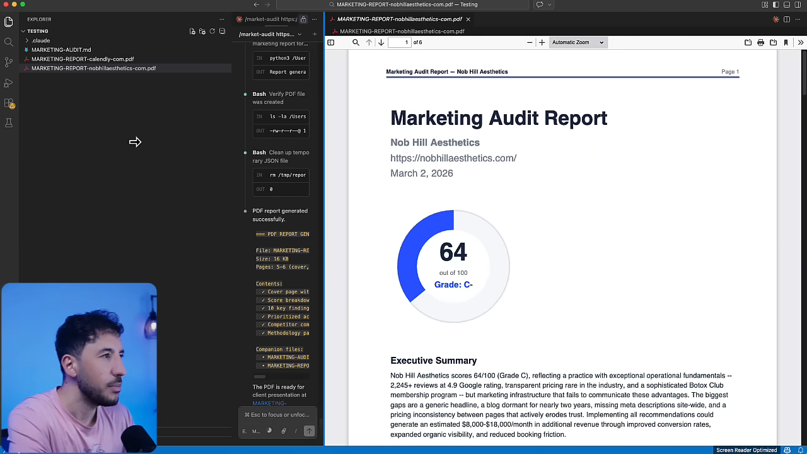
항목별 점수
여섯 항목에 가중치를 매겨 종합 점수를 내요. 이 업체는 브랜드·신뢰만 '좋음'이고 나머지는 모두 '보통'이에요. 발표자는 그만큼 개선할 여지가 많다고 읽어요.
| 항목 | 점수 | 가중치 | 상태 |
|---|---|---|---|
| 콘텐츠·메시지 | 62 | 25% | 보통 |
| 전환 최적화 | 68 | 20% | 보통 |
| SEO·검색 노출 | 62 | 20% | 보통 |
| 경쟁 포지셔닝 | 62 | 15% | 보통 |
| 브랜드·신뢰 | 74 | 10% | 좋음 |
| 성장·전략 | 62 | 10% | 보통 |
| 종합 | 64 | 100% | C- |
주요 문제
심각도 순으로 문제를 늘어놓아요. 가장 위에 있는 건 보톡스 패키지 가격 불일치예요. 보톡스 페이지에는 100유닛이 1,400달러(400달러 할인)로, 특가 페이지에는 같은 패키지가 1,500달러(300달러 할인)로 적혀 있어요. 두 번째는 사이트 전체에 메타 디스크립션이 하나도 없다는 점이에요. 그래서 검색 결과 문구를 구글이 알아서 만들고, 클릭률이 떨어진다고 지적해요.
실행 계획
할 일을 기간별로 나눠 줘요. 이번 주에 할 일, 1~3개월 중기 과제, 3~6개월 전략 과제예요. 이번 주 할 일에는 보톡스 가격 통일, 모든 페이지에 메타 디스크립션 추가, FAQ 페이지에 스키마 마크업 추가 등이 들어 있어요.
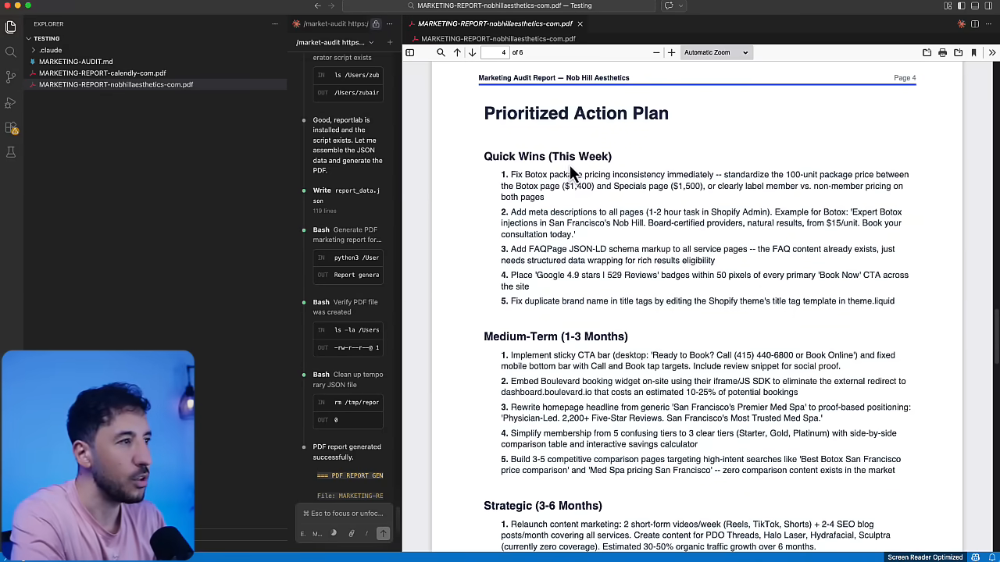
경쟁사 비교와 방법론
마지막 부분에는 실제 샌프란시스코 메드스파 세 곳과의 비교가 나와요. Hayes Valley Med Esthetics, SkinSpirit, Serenity MedSpa를 포지셔닝, 가격, 리뷰, 콘텐츠 기준으로 나란히 놓아요. 맨 끝에는 점수를 어떻게 매겼는지 방법론을 적어 둬서, 고객이 읽다가 헷갈리지 않게 해요.
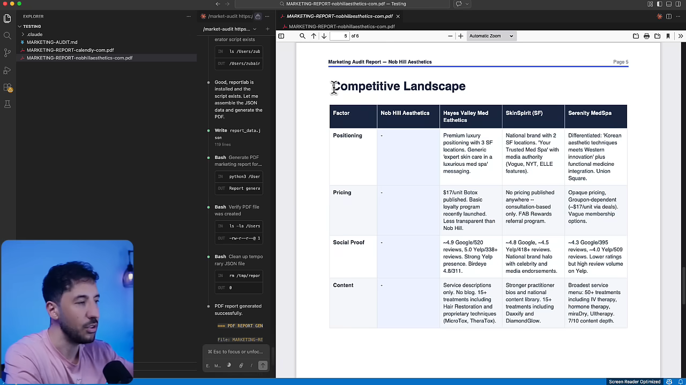
이 보고서로 고객을 얻는 법
발표자가 말하는 쓰임새는 영업이에요. 보고서를 업체에 무료로 보내고, 찾은 문제를 보여 주며 상담을 잡으라는 거예요. 많은 업체는 이런 일을 직접 할 여력이 없어서, 공짜로 가치를 먼저 받으면 상담에 응할 가능성이 높다고 봐요.
보고서에는 두 종류의 문제가 섞여 있어요. 가격 불일치처럼 업체가 바로 이해하는 문제와, 스키마 마크업처럼 업체가 뭔지도 모르는 문제예요. 뒤쪽이 컨설턴트가 끼어들 자리라는 게 발표자의 설명이에요. 어떻게 고칠지는 Claude Code에 물으면 단계별 계획을 받을 수 있다고 해요.
you can provide a service saying hey you know on a $2 to $5,000 a month marketing retainer depending on where you live
사는 지역에 따라 월 2천~5천 달러짜리 마케팅 리테이너로 서비스를 제안할 수 있어요.
— 영상 13:53